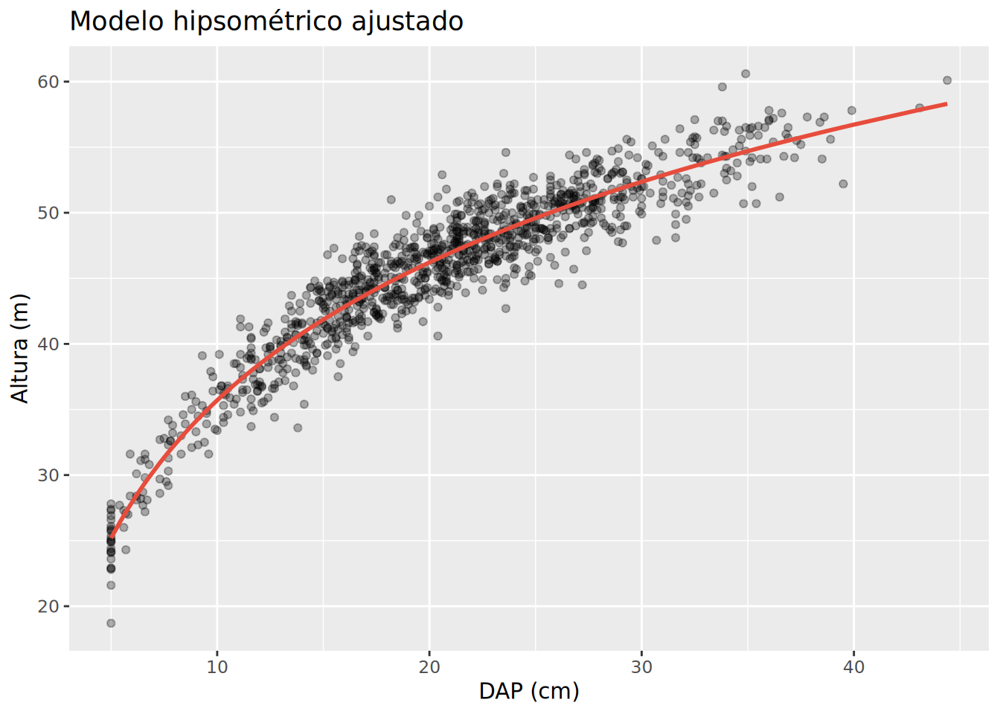
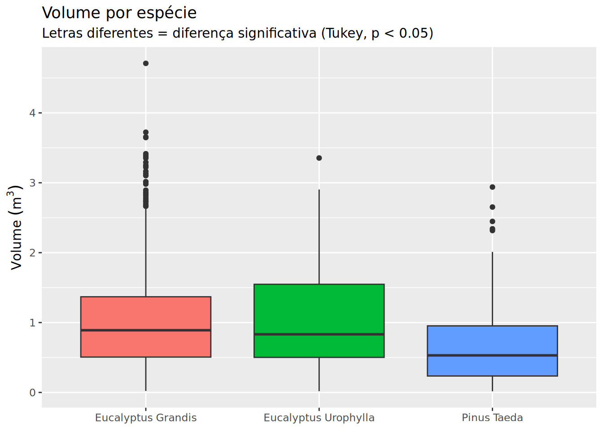

Call:
lm(formula = altura ~ log(dap), data = inv_florestal)
Residuals:
Min 1Q Median 3Q Max
-6.9870 -1.3747 0.0588 1.3301 6.2382
Coefficients:
Estimate Std. Error t value Pr(>|t|)
(Intercept) 0.7887 0.4150 1.9 0.0577 .
log(dap) 15.1632 0.1391 109.0 <2e-16 ***
---
Signif. codes: 0 '***' 0.001 '**' 0.01 '*' 0.05 '.' 0.1 ' ' 1
Residual standard error: 1.946 on 1129 degrees of freedom
Multiple R-squared: 0.9133, Adjusted R-squared: 0.9132
F-statistic: 1.189e+04 on 1 and 1129 DF, p-value: < 2.2e-16Modelagem Estatística e Projeto Final
Dia 4 — Tarde | 4 horas
Objetivos
- Ajustar modelos de regressão linear com
lm() - Interpretar resultados com
summary()ebroom - Realizar ANOVA e comparações múltiplas (Tukey)
- Produzir um relatório técnico completo de inventário florestal
Regressão linear
A função lm() (linear model) ajusta modelos de regressão. Vamos aplicá-la a dois contextos florestais clássicos.
Relação hipsométrica (altura ~ DAP)
Interpretação do summary():
- Estimate: coeficientes da equação. Para cada aumento de 1 unidade em
log(dap), a altura aumentab1metros. - R²: proporção da variabilidade da altura explicada pelo DAP. 0.78 = o DAP explica 78% da variação da altura.
- p-valor: probabilidade do coeficiente ser zero. p < 0.05 = significativo.
# A tibble: 2 × 5
term estimate std.error statistic p.value
<chr> <dbl> <dbl> <dbl> <dbl>
1 (Intercept) 0.789 0.415 1.90 0.0577
2 log(dap) 15.2 0.139 109. 0 # A tibble: 1 × 12
r.squared adj.r.squared sigma statistic p.value df logLik AIC BIC
<dbl> <dbl> <dbl> <dbl> <dbl> <dbl> <dbl> <dbl> <dbl>
1 0.913 0.913 1.95 11886. 0 1 -2357. 4719. 4734.
# ℹ 3 more variables: deviance <dbl>, df.residual <int>, nobs <int># Adicionar valores preditos ao dataset
inv_com_previsao <- augment(mod_hips, data = inv_florestal)
ggplot(inv_com_previsao, aes(x = dap, y = altura)) +
geom_point(alpha = 0.3) +
geom_line(aes(y = .fitted), color = "#E74C3C", linewidth = 1) +
labs(title = "Modelo hipsométrico ajustado", x = "DAP (cm)", y = "Altura (m)")
Modelo de volume
Call:
lm(formula = log(volume) ~ log(dap) + log(altura), data = inv_florestal)
Residuals:
Min 1Q Median 3Q Max
-0.37211 -0.07042 0.00353 0.07241 0.32412
Coefficients:
Estimate Std. Error t value Pr(>|t|)
(Intercept) -10.24013 0.16998 -60.24 <2e-16 ***
log(dap) 1.97437 0.02449 80.62 <2e-16 ***
log(altura) 1.04262 0.06238 16.71 <2e-16 ***
---
Signif. codes: 0 '***' 0.001 '**' 0.01 '*' 0.05 '.' 0.1 ' ' 1
Residual standard error: 0.1034 on 1128 degrees of freedom
Multiple R-squared: 0.9891, Adjusted R-squared: 0.9891
F-statistic: 5.131e+04 on 2 and 1128 DF, p-value: < 2.2e-16
TipDica de modelagem florestal
Sempre transforme volume com log() antes de modelar. O volume tem relação exponencial com DAP e altura — o log lineariza essa relação, melhorando o ajuste. Para obter o volume na escala original, use exp() na predição.
ANOVA — comparando grupos
A ANOVA (Analysis of Variance) testa se há diferença significativa entre as médias de três ou mais grupos.
Df Sum Sq Mean Sq F value Pr(>F)
especie 2 35.9 17.965 39.69 <2e-16 ***
Residuals 1128 510.5 0.453
---
Signif. codes: 0 '***' 0.001 '**' 0.01 '*' 0.05 '.' 0.1 ' ' 1 Tukey multiple comparisons of means
95% family-wise confidence level
Fit: aov(formula = volume ~ especie, data = inv_florestal)
$especie
diff lwr upr
Eucalyptus Urophylla-Eucalyptus Grandis 0.0002599707 -0.1695454 0.1700654
Pinus Taeda-Eucalyptus Grandis -0.3855308345 -0.4893433 -0.2817184
Pinus Taeda-Eucalyptus Urophylla -0.3857908052 -0.5655153 -0.2060663
p adj
Eucalyptus Urophylla-Eucalyptus Grandis 0.9999929
Pinus Taeda-Eucalyptus Grandis 0.0000000
Pinus Taeda-Eucalyptus Urophylla 0.0000016# Visualização: boxplot + letras de Tukey
inv_florestal %>%
ggplot(aes(x = especie, y = volume, fill = especie)) +
geom_boxplot() +
labs(title = "Volume por espécie", x = NULL, y = expression(Volume~(m^3)),
subtitle = "Letras diferentes = diferença significativa (Tukey, p < 0.05)") +
theme(legend.position = "none")
Delineamento experimental
Rows: 16
Columns: 3
$ bloco <dbl> 1, 1, 1, 1, 2, 2, 2, 2, 3, 3, 3, 3, 4, 4, 4, 4
$ tratamento <chr> "Controle", "Adubação", "Irrigação", "Adub+Irrig", "Control…
$ resposta <dbl> 24.1, 27.9, 33.4, 36.6, 19.1, 25.6, 31.3, 37.7, 30.6, 35.4,… Df Sum Sq Mean Sq F value Pr(>F)
tratamento 3 245.2 81.74 6.476 0.00745 **
Residuals 12 151.5 12.62
---
Signif. codes: 0 '***' 0.001 '**' 0.01 '*' 0.05 '.' 0.1 ' ' 1# A tibble: 2 × 7
term contrast null.value estimate conf.low conf.high adj.p.value
<chr> <chr> <dbl> <dbl> <dbl> <dbl> <dbl>
1 tratamento Controle-Adub+I… 0 -10.4 -17.9 -2.94 0.00648
2 tratamento Irrigação-Contr… 0 7.9 0.442 15.4 0.0369 Comunicando resultados
Tabela formatada com knitr::kable()
| especie | N° árvores | DAP médio (cm) | Altura média (m) | Volume total (m³) |
|---|---|---|---|---|
| Eucalyptus Grandis | 682 | 22.1 | 46.9 | 710.81 |
| Eucalyptus Urophylla | 99 | 21.7 | 46.4 | 103.21 |
| Pinus Taeda | 350 | 17.6 | 42.9 | 229.85 |
Projeto Final
ImportantSeu desafio final
Você recebeu um dataset de inventário florestal. Sua missão é produzir um mini-relatório técnico que responda às perguntas abaixo. Use tudo que aprendeu nos 4 dias.
Roteiro
- Importar o dataset
inv_florestal.csv - Calcular área basal e volume por árvore
- Explorar graficamente: distribuição diamétrica, relação hipsométrica, volume por espécie
- Modelar a relação altura ~ DAP e volume ~ DAP + altura
- Comparar volume entre espécies via ANOVA + Tukey
- Produzir uma tabela-resumo formatada com
gt
Entregáveis
- Um gráfico de distribuição diamétrica
- Um gráfico de relação hipsométrica com curva ajustada
- Um boxplot de volume por espécie com letras de Tukey
- Uma tabela-resumo com estatísticas por espécie
- A equação do modelo de volume com R²
Exercícios
Exercício 1
Ajuste lm(altura ~ log(dap), data = inv_florestal). Qual o R² do modelo?
Resultado esperado:
[1] 0.78Exercício 2
Ajuste lm(log(volume) ~ log(dap) + log(altura), data = inv_florestal). Qual variável tem maior influência (maior coeficiente padronizado)?
Resultado esperado:
# A tibble: 3 × 2
term estimate
<chr> <dbl>
1 (Intercept) -9.59
2 log(dap) 1.89
3 log(altura) 0.90log(dap) tem o maior coeficiente (1.89).
Exercício 3
Faça uma ANOVA: aov(volume ~ especie, data = inv_florestal). As espécies diferem significativamente em volume?
Resultado esperado:
Df Sum Sq Mean Sq F value Pr(>F)
especie 1 5.93 5.929 40.52 <2e-16 ***
Residuals 990 144.84 0.146Sim, p < 0.001 — há diferença significativa entre as espécies.
Exercício 4
Use TukeyHSD() para verificar qual espécie tem maior volume. Qual a diferença média?
Resultado esperado:
diff lwr upr p adj
Pinus Taeda-Eucalyptus Grandis -0.1664149 -0.21786 -0.11497 0Eucalyptus Grandis tem em média 0.17 m³ a mais que Pinus Taeda.
Exercício 5 (Projeto final)
Produza uma tabela-resumo com gt() contendo: n° de árvores, DAP médio, altura média, volume total e volume médio por espécie.
Resultado esperado:
Tabela formatada com 2 linhas (uma por espécie) e 5 colunas.